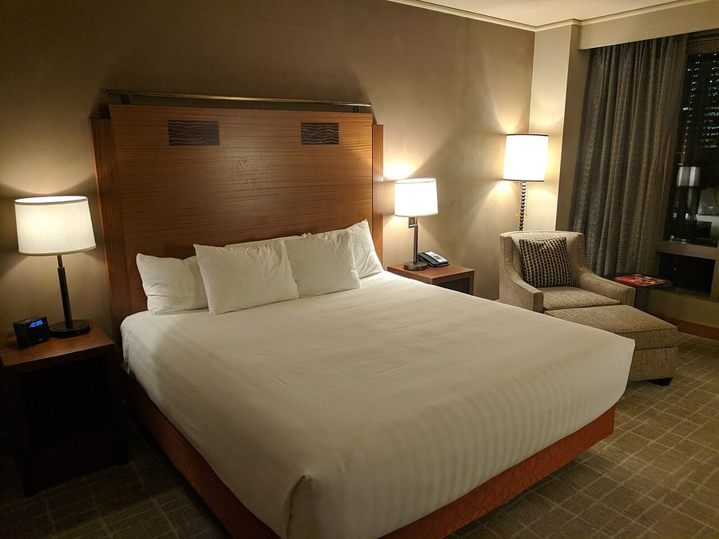

Tart Cherry Juice for Sleep: Does It Actually Work?
It's one of the few food-based sleep remedies with actual clinical trials behind it. Here's what tart cherry juice realistically does, and doesn't do, for sleep.

Key takeaways
- Small clinical trials link tart cherry juice to modestly longer, better-quality sleep, mainly in older adults with mild insomnia.
- It contains natural melatonin and tryptophan, though in smaller amounts than a supplement.
- The effect takes consistency — studies use it twice daily for a week or more, not a single glass before one rough night.
- It isn't a treatment for diagnosed insomnia, just a mild, food-based supporting habit.
- Added sugar is the main downside to watch, especially with daily use.
Tart cherry juice contains small amounts of melatonin and tryptophan and has shown modest improvements in sleep duration and quality in a handful of small clinical trials, mostly in older adults. It's not a strong sedative and works best as a consistent daily habit rather than a one-time fix for a bad night.
Tart cherry juice has a better research pedigree than most "sleep drink" trends, partly because it's cheap and easy to study, and partly because a few specific research groups have returned to it repeatedly over the past 15 years. The results are consistently modest, not dramatic, which is actually a reassuring sign that the effect is probably real rather than an overhyped fluke.
What is tart cherry juice and what's in it?
Tart cherry juice is made from Montmorency cherries, a sour variety different from the sweet cherries usually eaten fresh. It's rich in anthocyanins, the antioxidant pigments that give it its deep red color, along with small, naturally occurring amounts of melatonin and tryptophan, an amino acid the body uses to make both serotonin and melatonin. Most commercial products are sold as juice or a concentrated shot meant to be diluted.
How might tart cherry juice help you sleep?
Researchers propose a few overlapping mechanisms. The small dose of dietary melatonin may nudge the body's sleep-wake signaling, tryptophan provides raw material for the body's own melatonin and serotonin production, and the anthocyanins may reduce inflammation that can interfere with normal sleep architecture. No single mechanism looks powerful on its own, which fits with the modest, not dramatic, effect sizes seen in actual trials.
What does the research actually show?
A handful of small randomized trials, most notably in older adults with mild insomnia, found that drinking tart cherry juice twice daily for one to two weeks modestly increased total sleep time, often by around 15 to 30 minutes, and improved sleep efficiency compared with a placebo juice. These are small studies with modest sample sizes, and not every trial has found a significant effect, so the evidence is real but should be read as encouraging rather than conclusive.
One often-cited trial measured urinary melatonin levels alongside sleep diaries and found both rose modestly after a period of regular tart cherry juice intake, which supports the proposed mechanism even if it doesn't prove the sleep improvement came entirely from melatonin rather than from tryptophan, antioxidants, or some combination of all three. Larger, longer trials with objective sleep measures like actigraphy or polysomnography, rather than self-reported sleep diaries alone, would strengthen the evidence considerably. Until those exist, this stays a promising, well-tolerated option rather than a proven treatment.
How much tart cherry juice should you drink, and when?
Most of the studies showing a benefit used about 8 ounces (one cup) of juice, or an equivalent concentrate shot diluted in water, taken twice a day: once in the morning and once in the evening, roughly one to two hours before bed. The timing in the studies is twice-daily and sustained over at least a week, not a single glass right before an occasional rough night. If you're going to try it, give it several consecutive days before deciding whether it's doing anything.
| Approach | Typical dose in studies | What it's best suited for |
|---|---|---|
| Tart cherry juice | 8 oz, twice daily, 1–2 weeks+ | Mild, occasional sleep trouble; a steady habit |
| Melatonin supplement | 0.5–5 mg, 30–60 min before bed | Jet lag, shifted sleep schedule, short-term use |
| Magnesium glycinate | 200–400 mg before bed | Muscle relaxation, general sleep support |
Is tart cherry juice a substitute for melatonin supplements?
Not really, since the two deliver very different amounts of the hormone. A melatonin supplement gives a controlled, often much higher dose aimed specifically at shifting sleep timing, which is why our guide to melatonin and memory covers it as its own topic. Tart cherry juice provides a smaller amount, packaged with tryptophan and antioxidants, and its research base is about general sleep quality rather than precisely timing sleep onset. Some people use both at different times rather than treating them as interchangeable.
Who should be cautious with tart cherry juice?
People managing blood sugar should know that juice, even unsweetened tart cherry juice, still contains natural sugar and calories that add up with daily use; a concentrate diluted in water is usually the lower-sugar option. Tart cherry also contains some vitamin K, so people on warfarin or other blood thinners should check with a doctor before adding it regularly. Anyone with a cherry or stone-fruit allergy should obviously avoid it.
Is tart cherry juice or whole tart cherries better?
Both deliver the same core compounds, just in different concentrations. Juicing and concentrating cherries into a shot or an 8-ounce serving packs the anthocyanins, melatonin and tryptophan from dozens of cherries into a form that's easy to drink consistently, which is exactly the dose most clinical trials have tested. Whole tart cherries are harder to find fresh outside a short summer season, and dried or frozen versions vary more in concentration, which makes it harder to replicate a research-backed dose through whole fruit alone. For convenience and dosing consistency, juice or concentrate is the more practical option for most people trying this specifically for sleep.
What do sleep researchers say about food-based sleep aids generally?
Tart cherry juice belongs to a small category of foods, along with kiwi and warm milk, that have at least some controlled trial data behind a sleep claim, rather than just tradition or marketing. Researchers studying this category are generally careful to frame the effects as modest and supportive rather than a replacement for behavioral sleep habits like a consistent bedtime, a dark and cool room, and limiting screens before bed. The honest framing most sleep researchers use is that food-based approaches can nudge sleep quality a little, which matters more when it's stacked on top of good habits than when it's asked to compensate for poor ones.
How does tart cherry juice fit with other sleep habits?
It works best layered on top of basic sleep habits, not instead of them. If you're regularly getting less sleep than you need, our piece on whether 6 hours of sleep is enough is worth reading first, since no supplement fixes a consistently short sleep window. For another evidence-backed, food-adjacent option, magnesium glycinate for sleep covers a different, well-studied mineral approach. Because sleep and memory are closely linked, chronically poor sleep is also worth addressing for its own sake; see our guide to how to improve your memory for how the two connect.
Frequently asked questions
When should you drink tart cherry juice for sleep?
Most research uses two doses a day, one in the morning and one roughly an hour or two before bed, for at least a week before effects are measured. A single dose on one night is unlikely to show much benefit.
How much tart cherry juice should you drink for sleep?
Studies showing a benefit typically use about 8 ounces (one cup) of tart cherry juice, or an equivalent concentrate dose, taken twice daily. More hasn't been shown to work better and adds unnecessary sugar and calories.
Does tart cherry juice contain melatonin?
Yes, in small, naturally occurring amounts, along with tryptophan, a building block for melatonin and serotonin. The amounts are modest compared with a melatonin supplement, which may be why effects in studies are mild rather than dramatic.
Can tart cherry juice help with insomnia?
It may help mild, occasional sleep trouble modestly, but it isn't a validated treatment for diagnosed insomnia. People with chronic insomnia should still pursue evidence-based treatment like cognitive behavioral therapy for insomnia.
Is tart cherry juice better than melatonin supplements for sleep?
They aren't directly comparable. Melatonin supplements deliver a controlled, often higher dose, while tart cherry juice provides a smaller amount alongside other nutrients and some natural sugar. Melatonin has more research behind it specifically for sleep timing.
Does tart cherry juice have side effects?
It's generally well tolerated. The main downsides are added sugar and calories, and a mild laxative effect in some people at higher amounts. People on blood thinners should check with a doctor due to tart cherry's vitamin K content.
Can tart cherry juice help muscle recovery too?
Some research in athletes suggests tart cherry juice may reduce exercise-induced muscle soreness and inflammation, a separate line of evidence from its sleep research, tied to the same anthocyanin antioxidants.
Related: Melatonin and memory · Magnesium glycinate for sleep · Is 6 hours of sleep enough? · How to improve your memory · Sleep hub